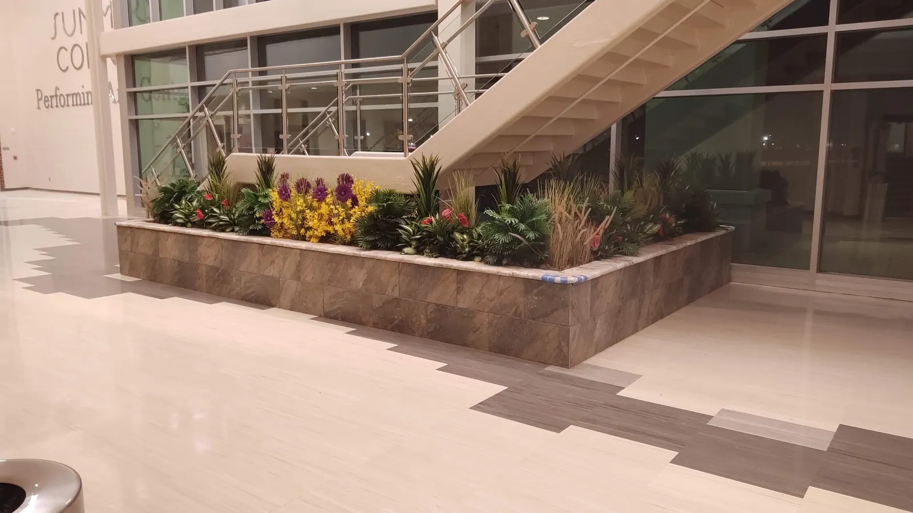
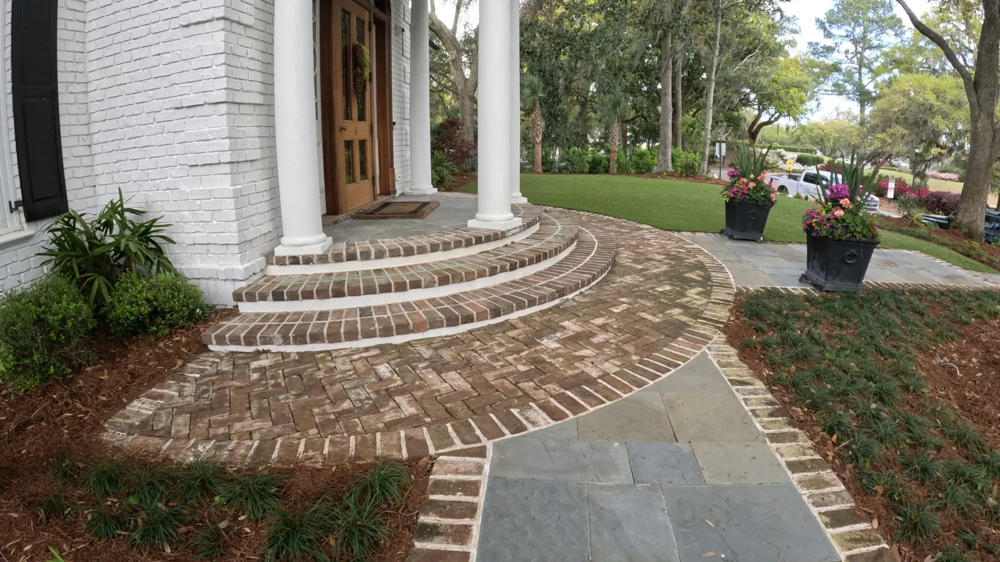

Isle of Palms, SC Salt-Air Coastal Landscaping
Coastal Landscaping Solutions in Isle of Palms, SC

Cramers Landscaping is proud to serve Isle of Palms, SC with professional landscaping services designed for the unique demands of coastal barrier island properties. Whether you own a primary residence, vacation home, or short-term rental on IOP, our team delivers outdoor environments that are beautiful, durable, and built to perform in a salt-air coastal environment.
From landscape design and installation to drainage, hardscaping, and ongoing maintenance, we offer full-service solutions tailored to Isle of Palms' coastal character and your property's specific needs.

Local Expertise for Isle of Palms Landscapes
Isle of Palms sits on a barrier island, and that coastal position shapes everything about how landscaping works here. Sandy soils drain fast but hold few nutrients. Salt air stresses plants that thrive just a few miles inland. Storm surge and heavy rainfall create drainage challenges that require specific engineering. At Cramers Landscaping, we bring deep coastal Lowcountry expertise to every Isle of Palms project.
We know how to design for:
- Salt air exposure and coastal wind
- Sandy, fast-draining barrier island soils
- Native and salt-tolerant plant selection
- Coastal drainage and erosion management
- Storm resilience and post-storm recovery
- Isle of Palms city and HOA guidelines
Our work is tailored not just to your vision — but to Isle of Palms' unique coastal landscape challenges and character.
Full-Service Landscaping Isle of Palms
Whether you own a primary home, vacation property, or investment rental, we provide everything needed to elevate your outdoor space.
Landscape Installation
We install native plants, salt-tolerant species, sod, trees, and mulch beds selected specifically for Isle of Palms' coastal conditions. Our installs are designed to thrive in sandy soils and salt air, with minimal ongoing intervention required.
Hardscape Installation
Build a custom patio, retaining wall, or walkway that complements your home and enhances outdoor living. We use materials that perform beautifully in IOP's coastal climate and stand up to the island's weather conditions.
Drainage & Grading
Coastal drainage is one of the most important — and most overlooked — aspects of Isle of Palms landscaping. We solve standing water, erosion, and runoff issues with targeted grading, French drains, and catch basin installations designed for barrier island conditions.
Irrigation Systems Installation
Keep your landscape healthy year-round with a zoned irrigation system designed for sandy coastal soils and salt-tolerant plantings. We also offer ongoing irrigation maintenance and seasonal adjustments.
Outdoor Kitchens
Extend your living space outdoors with a custom outdoor kitchen designed for Isle of Palms' year-round coastal lifestyle. We design and build complete outdoor cooking and entertaining areas.
Landscape Lighting
Enhance your property's beauty and security after dark with professionally designed landscape lighting. We design systems that highlight your home's architecture and outdoor living areas while complementing IOP's natural coastal environment.
Pruning & Bed Care After Install
Our crew handles routine maintenance so your Isle of Palms property looks its best year-round — whether you're on the island full-time or visiting seasonally.

Coastal Property Expertise

Isle of Palms properties require a landscaping partner who understands barrier island conditions. Our team has experience working with:
- Oceanfront and near-ocean residential properties
- Vacation and short-term rental properties
- Wild Dunes and other IOP community properties
- Properties with HOA and community design requirements
- Native Lowcountry coastal plant palettes
- Post-storm landscape restoration
We understand the island's natural character and work to enhance it — using plantings and materials that belong in a coastal barrier island environment and hold up to IOP's weather conditions.
Residential, Vacation, and Investment Properties
We serve a wide range of property types on Isle of Palms, including:
- Primary residences
- Vacation homes and second homes
- Short-term rental properties
- Wild Dunes resort-area properties
- HOA and community common areas
For vacation and rental owners we design yards that hold up with little upkeep, and we return to prune and shape what we planted.
 1 / 2
1 / 2 2 / 2
2 / 2Our Service Commitment

Cramers Landscaping isn't just another crew with a mower. We are full-service professionals who value:
- Clear communication and written quotes
- On-time scheduling and project coordination
- Experienced, background-checked crews
- Ongoing customer relationships
You'll work with a dedicated account manager and foreman who oversees your job from start to finish — and we'll keep you updated every step of the way.

Bundled Services Equal Better Value
Most Isle of Palms homeowners benefit from a bundled landscaping plan that combines:
- Landscape Installation
- Irrigation Installation
- Hardscape Design
- Landscape Maintenance
This approach ensures all aspects of your landscape work together seamlessly — drainage, planting, aesthetics, and long-term coastal performance.
We can create a phased plan to help you budget and build over time while maintaining a unified vision.
Frequently Asked Questions
Do you provide free estimates on Isle of Palms?
Yes. We offer free on-site consultations for Isle of Palms properties. Contact us to schedule a visit.
Are you licensed and insured?
Yes. Cramers Landscaping is fully licensed and insured for all residential and commercial landscaping work in SC.
What plants work best on Isle of Palms?
Salt-tolerant native species perform best in IOP's coastal environment. We recommend plantings like sea oats, yaupon holly, wax myrtle, muhly grass, coontie, and other Lowcountry natives that thrive in sandy soils and salt air without requiring heavy maintenance.
Can you handle drainage problems on Isle of Palms?
Yes. Sandy soils drain fast, but barrier island properties still face standing water, erosion, and runoff challenges — especially near impervious surfaces like driveways and patios. We install drainage solutions designed specifically for coastal conditions.
Can you maintain my property if I'm not on the island full-time?
Absolutely. We are not a mowing company. For clients we have built large projects for, we come back to prune and shape the planting as it was designed to grow — keeping hedge lines where the plan put them and the layering readable as things fill in. round with regular scheduled visits and seasonal adjustments.
Explore Everything We Build
From plantings and drainage to patios, pergolas and outdoor kitchens, see the full range of services we offer in Isle of Palms and across the Lowcountry.
Request a Free Consultation
Ready to improve your Isle of Palms property? Contact Cramers Landscaping for a free on-site consultation and estimate.
Call us at (843) 614-9773 or request a consultation online.
Cramers Landscaping | Professional Landscaping Services on Isle of Palms, SC
Phone: (843) 614-9773
Email: doug@cramerslandscaping.com
Website: cramerslandscaping.com